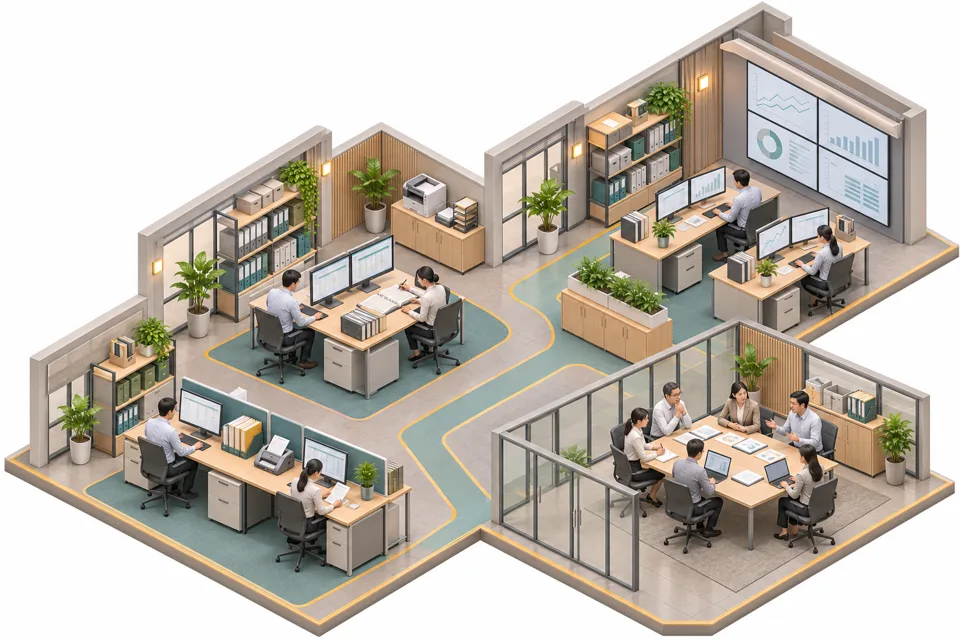
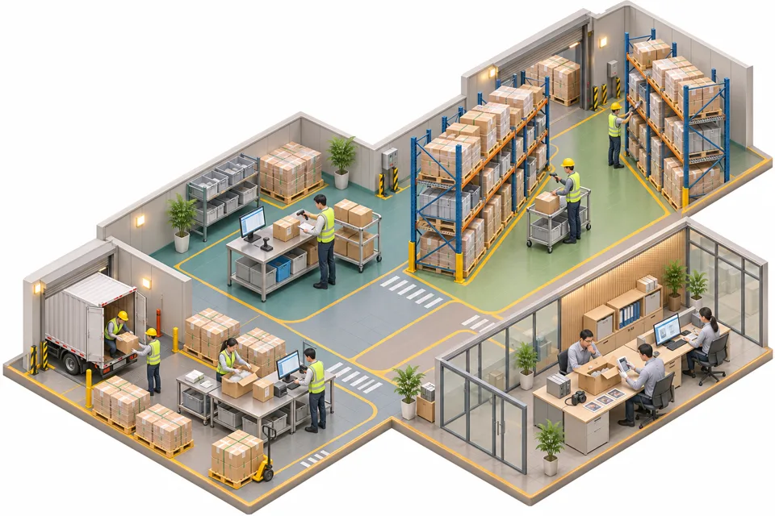
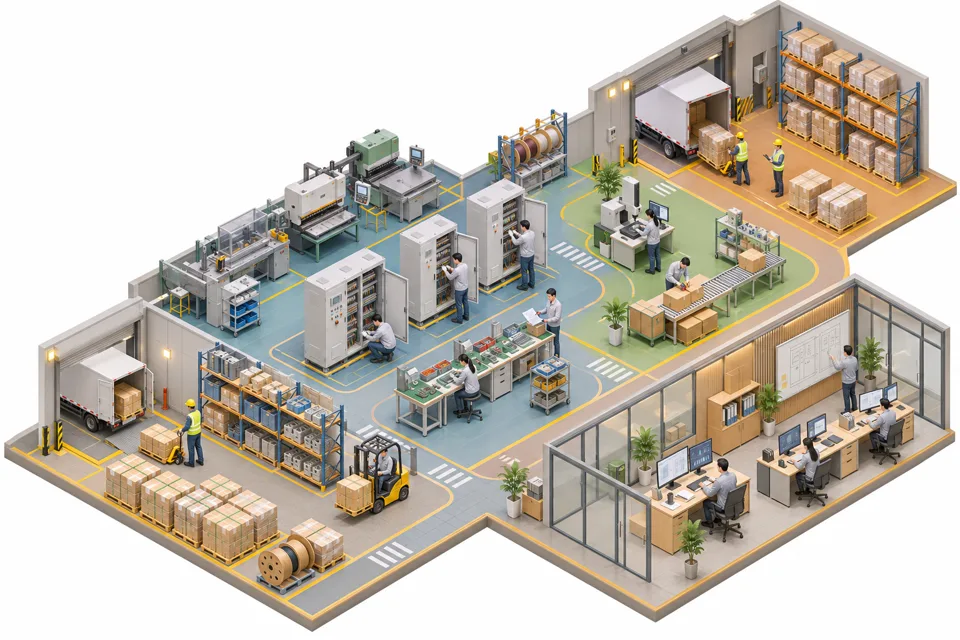
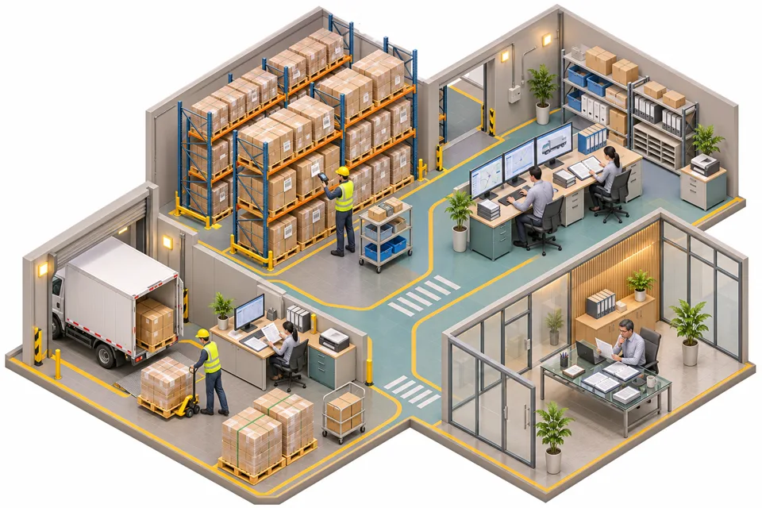
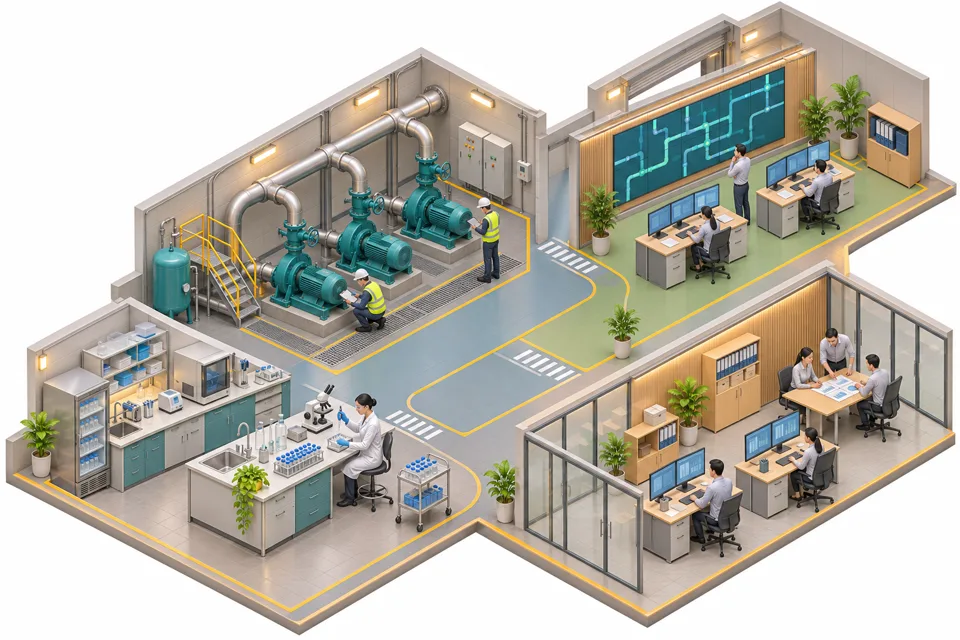
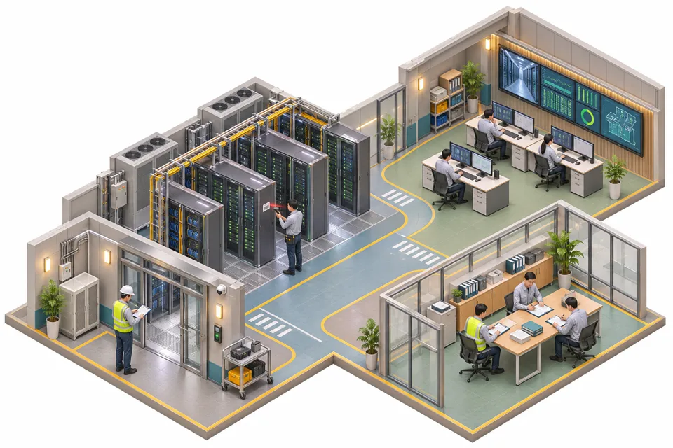
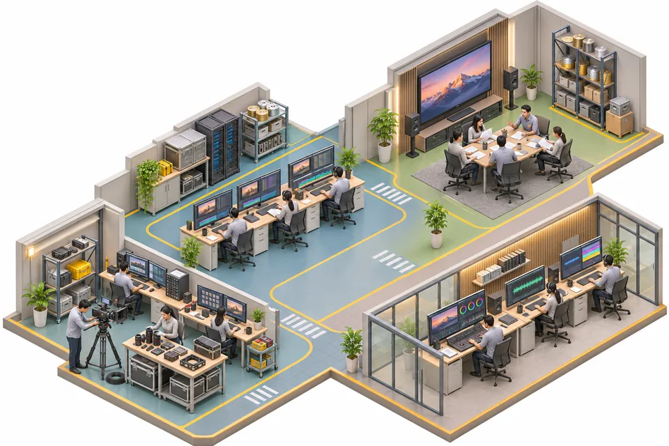
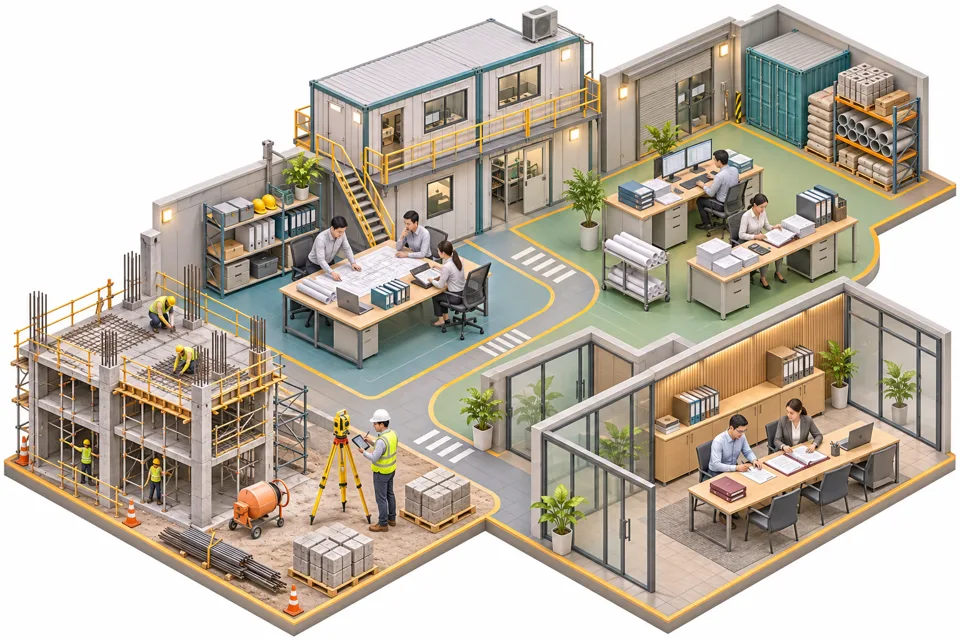

生活里天天接触01 · 8 个场景 · 156 个真实案例
通用
几乎每家公司都有的活：销售、财务、人事、采购怎么配合。
从这里开始一笔应收款，怎么查清还欠多少？先认识 2 个行话
- 应收账款货卖出去了、钱还没收回来的那部分
- 账龄这笔钱已经拖了多久没收
我们把 12 个行业里 706 个真实工作案例，画成一个个等距微缩的工位。不用懂行话，跟着一件具体的小事走一遍，就能看出这个行业的分工、交接和最容易出错的地方——这些往往就是产品机会。
故事线
3 分钟入门：沿着一个真实小任务，走完行业里的几个工位。
业务全景
看清上下游：客户、本方、协作方之间交接了什么。
场景地图
全行业的工作场景摆在一张图上，每个场景背后是真实案例。
流程拆解
把一条典型流程拆成几站，逐站看人、资料和产出。
第一次来？挑一个你最熟悉的行业，从「跟一件事走一遍」开始，看完 4 个工位再去看全景。

生活里天天接触01 · 8 个场景 · 156 个真实案例
几乎每家公司都有的活：销售、财务、人事、采购怎么配合。
从这里开始一笔应收款，怎么查清还欠多少？
生活里天天接触02 · 11 个场景 · 146 个真实案例
商品从工厂到仓库、到货架、再到你手上的全过程。
从这里开始一批货进海外仓，怎么核对短收和索赔？03 · 6 个场景 · 36 个真实案例
保险、银行、投资机构怎么服务客户，同时守住风险。
从这里开始一次理赔报案，怎么形成材料告知单？04 · 8 个场景 · 37 个真实案例
医院和药械企业怎么照顾病人、管好合规材料。
从这里开始一份出院名单，怎么变成随访台账？
把东西造出来、运出去05 · 9 个场景 · 66 个真实案例
把原料变成产品：接单、排产、生产、质检、发货。
从这里开始一张急单，如何走完工厂？
把东西造出来、运出去06 · 6 个场景 · 24 个真实案例
让货物在仓库、港口、车辆之间准确流动，账和货对得上。
从这里开始一笔库存差异，怎么追到责任环节？
把东西造出来、运出去07 · 7 个场景 · 56 个真实案例
水、电、热的生产和输送，关键是安全、稳定、可追溯。
从这里开始一个水质异常点，怎么追到管网记录？
专业服务08 · 9 个场景 · 50 个真实案例
让系统和机房稳定运行，出了问题能查到原因。
从这里开始一次机房巡检，怎么形成可追溯日报？
专业服务09 · 8 个场景 · 51 个真实案例
影视、内容和营销作品从创意、制作到发行。
从这里开始一份粗剪字幕，怎么交给剪辑和译制？10 · 6 个场景 · 22 个真实案例
老师怎么备课、上课、评价，学校怎么办学和做科研。
从这里开始一份教案，怎么从课堂回到教研库？11 · 6 个场景 · 38 个真实案例
市民的诉求和办事，怎么流转到对的部门。
从这里开始一通 12345 来电，怎么找到承办单位？
公共与社会12 · 7 个场景 · 24 个真实案例
盖楼、修景区、办活动，每一次改动都要留下证据。
从这里开始一次施工变更，怎么留下签证证据？没有匹配的行业，换个词试试。